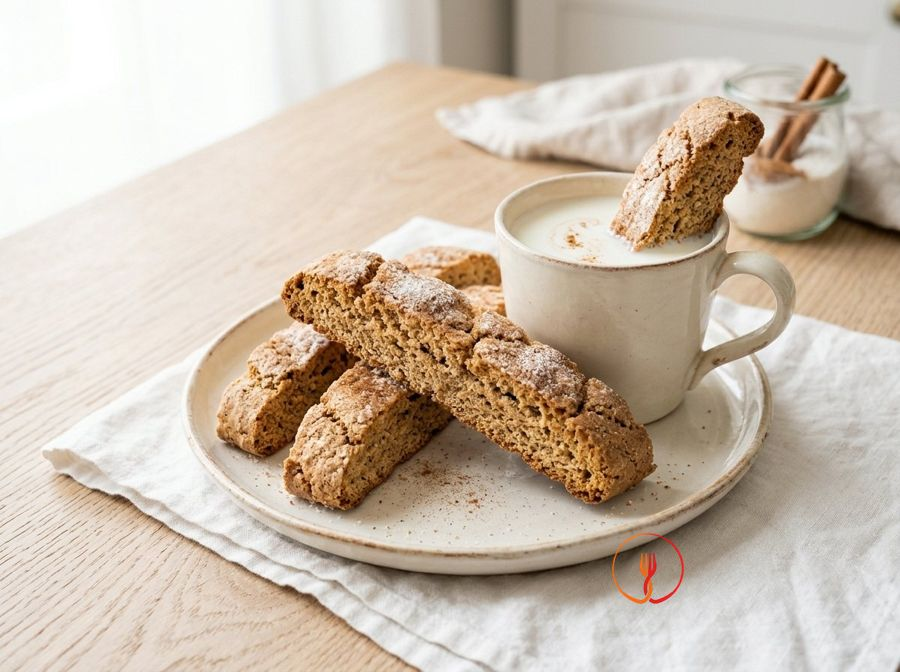

Cinnamon and Milk Dunking Biscuits
Rustic and giant biscuits, just like the ones made in the old days for a whole week's breakfast. Their porous texture makes them ideal for dipping into milk or tea.
These rustic biscuits are designed for dipping in milk or tea, thanks to their porous and sturdy structure. The scent of cinnamon fills the kitchen as they bake, evoking the simple flavors of tradition.
Ingredients
- Plain flour (Type 00)500 g
- Caster sugar150 g
- Sunflower oil100 ml
- Whole milk100 ml
- Baking powder (Italian 'lievito per dolci')10 g
- Medium egg1 pcs
- Ground cinnamon1 cucchiaio
Allergens
Gluten, Eggs, Milk
Method
- Begin by preheating your fan oven to 180°C and preparing a large mixing bowl for the liquid base of your biscuits. Crack 1 medium egg into the centre and add 150g of caster sugar, 100ml of sunflower oil, and 100ml of whole milk at room temperature. Use a fork or a hand whisk to vigorously emulsify the liquids until the sugar has partially dissolved and the mixture appears smooth and slightly frothy. The chef's secret is ensuring the milk isn't fridge-cold to allow the oil's fats to bond more effectively with the egg proteins.
- Now add the aromatic notes and the leavening agent to give structure and fragrance to the dough. Dust 1 tablespoon of ground cinnamon directly over the liquids and sift in 10g of baking powder to prevent any unpleasant bitter lumps from forming. Mix briefly with the fork to distribute the powders evenly, immediately noticing the warm, spicy aroma of the cinnamon being released. Chef's tip: use high-quality cinnamon (such as Ceylon) for a more delicate and less pungent fragrance.
- Proceed by incorporating 500g of plain flour, adding it a little at a time while continuing to work with the fork. Pour the flour in three or four stages, allowing the liquid part to fully absorb each dose before adding the next one. You should obtain a mixture that is initially creamy, then becomes a dense mass that is almost difficult to stir with the fork. The key is not to rush this stage to ensure the baking powder is perfectly distributed throughout the entire mass.
- Once the dough has become solid enough, lightly flour a wooden pastry board or a marble surface and transfer it onto it. Work the dough with the palms of your hands for about 3-4 minutes, using firm but not overly vigorous movements to avoid overheating the oil. The final result must be a smooth, elastic, and non-sticky ball that detaches easily from your fingers. If the dough still feels too damp due to the flour's moisture, add only an extra pinch of flour without overdoing it, or the biscuits will become tough.
- Now divide the dough into equal pieces of about 40-50 grams each, using a dough scraper or a smooth-bladed knife. Take each piece and roll it under your palm on the board to form small logs about 8-10 cm long, or cylinders slightly flattened at the ends. Try to maintain a uniform size for all pieces to guarantee even baking in the oven. A professional trick is to weigh the first three pieces on a scale to 'calibrate' your eye and then proceed with confidence.
- Prepare a small plate with some extra caster sugar to create the typical rustic finish of dipping biscuits. Take each log and gently press only the top surface into the sugar, making it stick well thanks to the natural moisture of the dough. This process will create a crunchy crust during baking that will contrast wonderfully with the porous interior of the biscuit. Do not sugar the base, otherwise, the sugar in contact with the tray will tend to caramelize too quickly and risk burning.
- Line a large baking tray with greaseproof paper and arrange the biscuits well-spaced from each other, leaving at least 3-4 cm of space between them. Milk biscuits tend to rise significantly during baking, expanding in both height and width. If you have many biscuits, use two different trays instead of crowding one to allow the heat to circulate freely. Chef's tip: if you want an even more rustic look, you can make small diagonal slashes on the surface before putting them in the oven.
- Bake the tray on the middle shelf of the preheated oven at 180°C for about 15-20 minutes, monitoring the colour carefully. The biscuits are ready when the surface appears golden and the sugar has formed small shiny crystals, while the base should be slightly darker. Avoid baking them much longer than 20 minutes; even if they still feel soft to the touch, it is normal because the structure will stabilise as they cool. A common mistake is waiting for them to become hard in the oven, which would make them impossible to eat later.
- Remove the biscuits from the oven and let them rest on the tray for at least 5 minutes before transferring them to a wire cooling rack. This step is essential to allow the residual moisture to evaporate evenly, ensuring the right crispness needed for dipping in milk. Once completely cold, store them in a tin or an airtight container in a cool, dry place. By following these steps, your biscuits will remain perfect and fragrant for over two weeks, ready for your daily breakfast.
Tips
- Avoid overworking the dough to ensure the biscuits remain crumbly and light after baking.
- Store them in a tin box or a sealed glass jar to keep them fresh and fragrant for several days.
- For a more pronounced crust, lightly brush the tops with a little milk before coating them in sugar.
Variations
- Add a pinch of ground ginger to the dough for a more complex and spicy aromatic profile.
- Replace the sunflower oil with melted butter if you prefer a richer and more buttery taste.
Nutrition facts (estimate)
| Per serving (204 g) | Per 100 g | |
|---|---|---|
| Energy | 3372 kJ / 806 kcal | 1653 kJ / 395 kcal |
| Protein | 13.8 g | 6.8 g |
| Carbohydrates | 126.2 g | 61.9 g |
| of which sugars | 38.7 g | 19.0 g |
| Fat | 26.4 g | 12.9 g |
| of which saturates | 4.9 g | 2.4 g |
| Fibre | 3.8 g | 1.9 g |
| Salt | 0.35 g | 0.2 g |
AI estimates based on average CREA / USDA data: indicative only, not a substitute for medical or dietitian advice.
Open the recipe in the app for the shopping list, ingredient sheets and nearby shops.